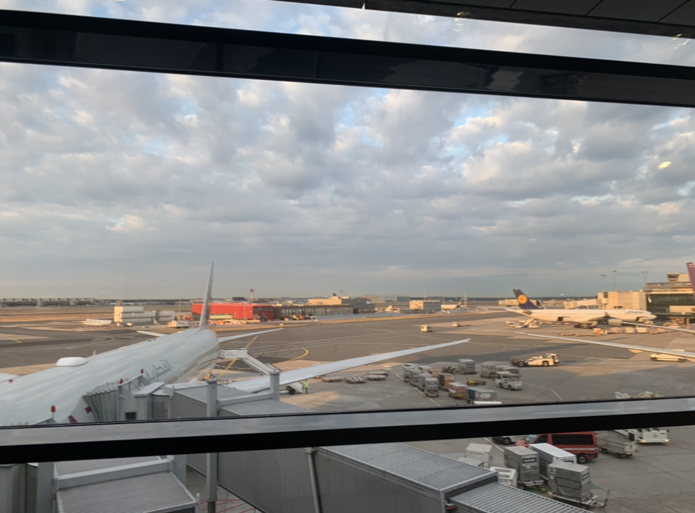

ドイツ滞在の記録
現在ドイツの大学院にいます. 内部モデル理論を研究しています.
31.08.2022 und 01.09.2022
羽田空港から出発しました. 直行便が現在40万円超えるのでカタール航空を利用して数回の乗り継ぎで行きました.
東京, バンコク, ドーハ, フランクフルト, ミュンスターの順で行きました.

バンコク, スワンナプーム空港で乗り継ぎの時に撮った写真.

タイ語で書かれたコアラのマーチ. 値段は日本と同じくらいだった記憶.

ドーハ, ハマド国際空港の様子. 空港はかなり大きかった. 8000円ぐらい課金してラウンジを利用した. かなり快適だった. シャワーを浴びることができます.

フランクフルトについたときの様子. 空港内だと日本とあまり変わらない気がする. もちろん日本語は通じない.
長期フライトの感想:
- 重量制限で替えのtシャツをスーツケースに入れたけど1枚は無理やり持っていくべきだった. (持ち込み手荷物の重量は測定されなかった. )
- トランジットの猶予時間はそれぞれ3時間ほどだったがちょうどよかった. これより短いと休めなかったりで大変そう.
- 一度シャワーを浴びることができたおかげでかなり楽だった. あとは課金してラウンジを使うべきだと思った.
- ネックピロー, 耳栓をちゃんと用意して正解だった.
フランクフルトからミュンスターへ行くときの上空の様子. ぱっと見は鹿児島の上空と変わらない気がしたが, 細かい部分は日本と違うように思われる.
まず住宅の形が違う. この写真には写っていないがあちこちに風力発電機があった.

ミュンスターについた時の様子. 午前10時半ごろ. 預けていた手荷物は18時に着くと言われる. まだ住む
場所どころかこの日泊まる場所すらなかったので荷物は明日回収することにする. ひとまず大学へ向かう.
バス停が全くわからず7キロあるリュックを背負って3, 4kmほど歩く. フライトの疲れも相まってかなりしんどい.
Internatinal Stundet Officeに相談しに行く. かなり粘ったところ二か月の一時的な滞在場所であるが無事見つかる. 生存.
ドイツではシェアアパートメントのことをWGというらしい. ミュンスターで一番大きい駅Hbfの裏にあるホテルに泊まった.
02.09.2022
ホテルにて起床. このホテル, アメニティが無い. めちゃくちゃ喉が渇いたり, 肌が乾燥したりする. 湿度が低いせい?? 水道水は普通に飲める. 硬水はまずいイメージがあったがそうでもない??
ホテルで朝食をとる. 昨日夜ご飯を食べてなかったのでその分かなり食べた. ハム, チーズ, パンがかなり美味しい.

街並みの様子

空港に荷物を救出しに行く. 受付に取りに行くも空港内のシステムには登録されてないと言われる. 焦る.
AirTagで荷物を探したところ空港内にあることがわかり探してもらった結果見つかった. 荷物検査はかなり緊張したが無事終わる. 再び中心街へ戻る. 4時間ぐらい時間を駅で潰す.
スタバとマックで時間潰した.

入居した部屋. ここに二か月住む. 家賃は光熱費込みで300ユーロ, ミュンスターでは平均的な価格である.
貸主はオマーンから来たらしい. とても優しい. ありがたい.
とりあえずジャケットをかける. 疲れたので寝る.
03.09.2022
今日は携帯やタブレットを充電するプラグを買いに行く.
今日はCrockett&Jones AUDLEYを履いた. 非常に良い靴です.
朝の街並み.

無事買えました. タイプC用も買った.
ドイツ人みんな身長高い. 男性女性ともに180cmオーバーが当たり前な印象. 190cmぐらいも普通にゴロゴロいる. 自分(174cm)より小さい人を見つけることが難しいぐらい.
服装の傾向はなんとなくわかってきた. 男性はトートバッグを使わないは本当っぽい. 手ぶらも多い. 残念. パーカー, ジーンズ, スポーティなシューズって感じの組み合わせが多い.
04.09.2022
眠くてダラダラしていた. 寝過ぎて頭が痛い. ぼやきを改修する. 数学に集中したいがすることがいっぱいだったりで困る.
ドイツビールを買いました. よくわからなかったので適当に3本買った. あとはおつまみのハム. これがめちゃくちゃ美味しい.

色々やることをやる. 研究の方も進めたい.
05.09.2022
ちゃんと早起きしてやることをやる. そのあとは数学をして一日過ごしたい. 朝ご飯はコーヒーとパン. パンはこれで70円ぐらい.

パンがとても塩辛かった. もう買うことはない. ルームメイトがキッチンを掃除したときにショートしたらしく, キッチンが昨日から使えない. お腹空いてどうしようも無くなったら外食にするかも.

窓からの景色. 先輩とCore Model Inductionについて議論した. 久しぶりに人と数学の話ができた気がする. 渡航準備で忙しくてあまり数学ができていなかった.
内部モデル理論の研究者になれるか不安な部分もあるけどやるしかない. 乗り越えていかないといけないという気持ちになった.
数学のことだったり, 生活のことだったり不安なことばかりな気がする. 異常に肌が乾燥する.
指導教官が賞を受賞していた. 最近デカい定理を示していて, それによるものだそうだ. 自分はP_maxをほとんど勉強していないのでどれだけ偉い結果なのかをちゃんと理解していない.
P_max勉強しないとなぁ... Normalizationだったり, P_maxだったり, Stacking Miceだったり, 勉強しないといけないことがいっぱいだ.
Core Model Inductionがかなり難しいのでそれにエネルギーを吸われている現状. P_max自体はMMを最近触っていたのでモチベーションは上がりつつある.
LarsonがSRPのをforceしたりしているのは気になる.
食事基本的に肉, 野菜(サラダ), パンしかない. パンは1個0.4ユーロから0．5ユーロほどで買える. 結構硬いが美味しい.
肉はソーセージを焼いたりして食べている. 肉を買ってきて調理する気にはまだならない.
野菜はサラダ用の野菜詰め合わせにサウザンドドレッシングをかけて食べている. 3食分が1ユーロから2ユーロくらい. ドイツ人のルームメイトがサラダを作っていたので真似してみようと思う.
06.09.2022
朝は曇りだった. 眺め.
午前中はドイツで使う普通預金口座の開設をした. N26というところを使った. 噂には本人確認のビデオチャットがかなり難しいと聞いていたが一発で成功した.
円安がかなり進行している心配だ. 家でドイツ語の課題をやったり, 数学したりした. 夕方お腹が空いたのでスーパーに買い出し. その時の風景.

師匠に教えてもらったペペロンチーノを作ることにした. 唐辛子, きのこ, パスタを買った. あとビールも買った. 飲みながらこれを書いている. 1本500mLで0.4ユーロ, 安い.
きのこのレパートリーが2種類しかなかった. きのことソーセージのペペロンチーノ. 師匠直伝なのでうまい.


07.09.2022
あんまり進捗がない1日だった. 安さに釣られてディスカウントスーパーで買ったパンが想像を絶する不味さだった. 口に入れた瞬間体が拒絶して吐きそうになった.
ドイツのスーパーにも序列があって, パンはそれなりのスーパーかベーカリーで買うことが推奨されることを知った.
食べるものがなくなったのでREWEというドイツで有名なスーパーマーケットに行った. ここのパンはちゃんと美味しい.
好きなタイプのパンが1個0.25ユーロだったので8個買った.
あとはソーセージも買った. 焼いて食べた.
靴の手入れもした.


明日は溜まっているドイツ語の課題とCMIをやる.
08.09.2022
家にずっといた. 数学したり, 書類書いたり, ドイツ語の課題をやったりした. 特に書くことなし.
09.09.2022
寮に応募する書類を書いた. 店でPDFを印刷したり, 切手を買って書類を投函するなどした. 一度やっておくとあとはできるのでやってよかった.
郵便局は探すのに手間取った. 途中迷ってPostの文字を見つけたのでこれだ!!と思って入ったらPostBankという名前の銀行だった. 書類出したあとは散歩した.
滞在許可の申請の前に住民登録をしないといけないらしい. そこらへん真面目に調べてなかったので全く知らなかった.
不法滞在の可能性があるのに真面目に調べてないとはどういうことだ??
言い訳をしておくと, 渡航直前かなり忙しくて後回しできることは全て後回しにしたのでビザ関係も後回しにした.
しかもドイツに来てから二週間以内に終わらせないといけないらしい. 新型コロナウイルス流行の影響で役所手続きはインターネットで予約が必要らしいのでやる.
かろうじて月末の予約が取れる. 埋まってて二週間以内とか無理じゃないか??とサボっていたのに逆ギレをしておく. まあどうにかなる(する).
今日の靴.


11.09.2022
パンの腹持ちが悪すぎるのでついにじゃがいもに手を出すことにした. 1kg170円ほどだった. ちょっとヨーロッパっぽい(?)食事ができた. イタリアのビール.

今日の靴. Berwickです.
日本円をユーロに替えて銀行口座に送金した. 結構面倒だった. 10万円を両替したが700ユーロ弱だった.
大学からいろいろ書類がきたので手続きをした.
12.09.2022
午前中にsimカードの契約をしに行った. 月20GB使えて15ユーロだった. 安いと思う. 速度も不満なし. O2というドイツの3大キャリアの1つにした.
そのあとはshoepassionという革靴専門店に行った. 前日に行こうと思って調べていて知ったことだがHeinrich Dinkelacherはshoepassionの子会社になっているらしい.
あと大阪にHeinrich Dinkelacherの直営店があるらしい. 青山にあったら絶対行ってたのに...と思った. 店員さんと色々革靴について話した.
そのあとHeinrich DinkelacherのMilanoというモデルを試着させてもらった. 定番はRioというモデルだがちょっとゴツくてまだ選択肢にはない.
店員さんがラストから色々選んでくれて楽しかった. 最初UK7で履いたが新品の段階でベストフィットだったのでUK6.5をお願いするがなかったので取り寄せることにした.
Heinrich Dinkelacherはソールが非常に独特で, その履き心地は革靴のロールスロイスだとか. 実際かなり独特な見た目のソールで驚いた. そして分厚い.
Milano自体がかなり細めのラストで履き心地がとてもよかった. これで足に慣れるとどうなるのか気になる.
革の質自体もかなり良さそうに見える. かなり丁寧に接客してもらって安心した. 街にこういった素晴らしい革靴専門店が1つあるだけでもかなり嬉しいし, 安心した.
帰りに大聖堂を眺めた. いつも観光客がいるが, ちょうどいなかったので写真を撮った.

住民登録についてキャンセル待ちがあるか確認したほうがいいとアドバイスをもらったのでたまたま予約サイトを見たら明日の予約が取れた. 安心である.
13.09.2022
書類が足りなかったので住民登録はいけなかった. 足りなかった書類に関しては部屋の貸主が忙しくて書類が送れたのでしょうがない. 予約を取るコツはわかったので今週中にリベンジする.
午前中は荷物の受け取りがあったのでそれで待機していた. 届いた鞄. レザーはかなりいい感じ. もちろんipadは入る.
あとはREWEのパンコーナーの横にドーナツが売ってあってずっと気になっていたので買ってきた.
右の方はスタバにほとんど同じやつが売ってあってそれを食べて以来このタイプは好きである.
ルームメイトの来客があり午後は外出した. 街の中心にどういう服屋があるのかぶらぶらしていた.
地図上で眺めてた時より思ったより好みの店が多くあって嬉しかった. 良さげな紳士服の店があったのでそのうちワイシャツを買いに行きたい.
あとはバブアーがあった. ここも10月以降に行きたい.
今は日中は涼しいぐらいで夜は少し冷えるぐらいの気候. コートを着ている人もちらほら見るぐらい. もう少し寒くなったらボーダーを着たい.
前回の冬に2，3回ぐらいしか着てないのでまだ生地が柔らかくない. 今年の冬は結構着るつもりである.
ただドイツの冬はかなり厳しいらしいので秋から初冬にかけてになりそう.
ゴム引きコートはシワがつくのを嫌って厳重な梱包で日本から船便でやってきます. まだお預け.
あとは適当によった靴屋がCrockett&Jonesを結構置いていてかなり驚いた. かなり楽しい気持ちになってきた.
渡航直前に友人達と青山をぶらぶらしたのだが, その時にParabootに行ったのかなり楽しかったなぁと今になって思った.
革靴を見るのは好きだが人と見に行ったり話すのも非常に楽しい. 誰か革靴見に行きましょう.
ドイツ国内でも行きたい革靴の店が大量にあるのでぼちぼち制覇していきたい.
夜ご飯は適当にサラダとじゃがいも. じゃがいもが主食という気持ちになってきた. 美味しい.
(以下駄文です. )
円安がかなり進行していることが最近の懸念である.
今1ユーロ144円だがもっと円安が進行する前, さらにいうと円高に振れたタイミングで持っている円をユーロに替えたい.
10月以降にいただく奨学金はユーロ建てなので円安による目減りの懸念は全くないが, 円建てで奨学金をもらっている人はかなり大変だと思われる.
実際円建てで奨学金を貰っている場合, 今年に入ってからの目減りは途轍もない大打撃だろう. (あとは海外旅行するハードルが円安とインフレで非常に上がっているのも感じている. )
これほど急速に円の価値が下がっていくい中で日本国内への影響がどれほどなのか興味がある. 今年一年の物価上昇がどれほどなのか調べてみようと思う.
物価の話繋がりだが, 生活してて物価は日本と比べると高いなと感じる. もちろん日本で買うより安いものもあるが大半は日本より高い.
ちゃんと全てを計算しているわけではないが例えば食費だと1．5倍近くの差を感じる. 外食に至っては倍はある.
バンコクで乗り換えした際に空港内をぶらぶらしていたが, 空港内で見た限りだと日本の物価と同じかそれ以上だった. (あくまで空港内かつ首都バンコクの話だが. )
物価に関しては日本はかなり安いという実感は湧いてきた.
日本の一部地域(自分の地元はそれに該当すると思う. )では農業の人出を確保するために東南アジアから来た人を雇っているがそのような人たちが日本に来なくなるような未来もそう遠い話ではないんじゃないのと思っている.
今後日本では急速に人手不足が進行していくという予測もあるなど心配である. (この話は日本政府が発表している資料で見た覚えがある. どれかは忘れた. )
どこまでが実現する話なのか自分は全く知らないし, 日本政府から発表されている資料を読んだり, 国内国外のニュースを見たりしているだけなので全く詳しくはないがやはり不安である.
日本のアカデミアに対してもそういった自分の中で不安がある. (日本の学術に関する状況がここ数年はかなり悪く, 低迷しているという話は叫ばれておりかつデータとしても出ている. )
こういった経済の問題や高齢化などは日本で最近懸念されている問題である. 日本にだけ問題があるわけではなくて, もちろんそれぞれの国にもそういった問題は少なからずある.
もちろんドイツにもそういった問題はあるだろう. (最近だとエネルギー問題とか?)
自分としては一度外に出てみて, 現地の人に話を聞いたり, 内部から政治を眺めたりして他の国ではどうなっているかを知りたいという気持ちが学部2, 3年生の頃からあった.
もちろん自分の専門の数学のためにドイツにきたわけだが, こういった気持ちも少なからず後押ししている. 博士まで進学するつもりなので5年はある.
その5年の間に数学をしながらもアンテナを広げてそういった情報を得ながら, ゆっくり考えていきたいと思っている.
今後日本の経済状況だったり, アカデミアを取り巻く環境が良くなれば日本に戻りたいとはもちろん考えている.
(駄文終わり. )
まあ色々不安はあるけど, 数学は楽しいよ. ドイツでの生活今後も不安だが数学があれば大丈夫という気持ちはある. 数学やるぞーー.
14.09.2022
今日は保険に関する手続きと住民登録をした. 保険に関してはあまりにも何をすればいいのかわからなかったので腹を括って保険会社に凸した. すんなり終わった. これで入学手続きは完了だと思う.
地域の交通機関が乗り放題なのでどこか行きたい. 少し時間が余ったのでマックで時間潰す. 日本で食べてたマックよりポテトが断然うまい.
そのあと住民登録をした. これもすぐ終わった. 予約を取れたのが役所の支部だったのでそこまではバスで行った.
バスの運転手がドイツ語だけ喋る人で通じなくて困った. すいません. 後ろにいた人に英語で通訳して貰ってgot Kotonaki. ドイツ語もぼちぼち喋れるようになりたい.
英語だったらいけるんだけどなぁ...と思いつつもドイツ語練習せねば.
ただドイツ語コースの成果もあってかある程度聴き取れるになってきた. ドイツ語コースの費用も奨学金から出してもらえるのでとてもありがたい. 保険に関しても全額奨学金から出るので安心である.
ドイツ語コースも数学の負担にならない程度に進めていこうと思う. ドイツ語それなりには喋れるように頑張る.
バスで10分ほど揺られて役所に着く. 手続きは一瞬で終わった. これで私も住民です. あとは滞在許可だけである.
滞在許可は3ヶ月以内に取ればいいのでまだ余裕がある. これで安心して数学ができる.
Hbfについてからはぶらぶら散歩したあとビールを買って帰宅. メールとか返したり, 靴を磨きながらビールを飲む. そろそろ取り寄せた靴が届いた連絡が来ないか楽しみである.